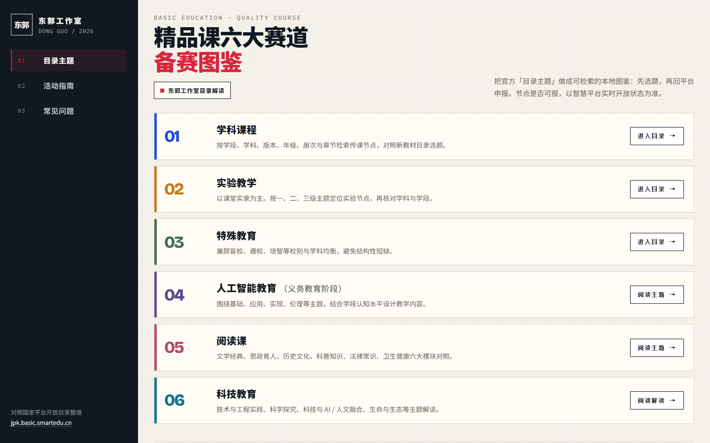
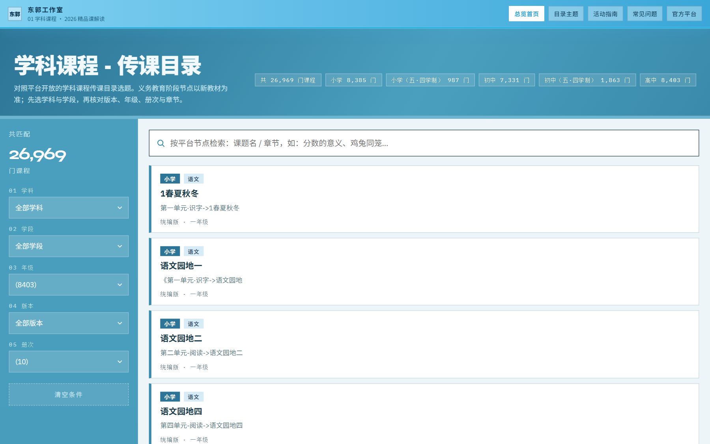
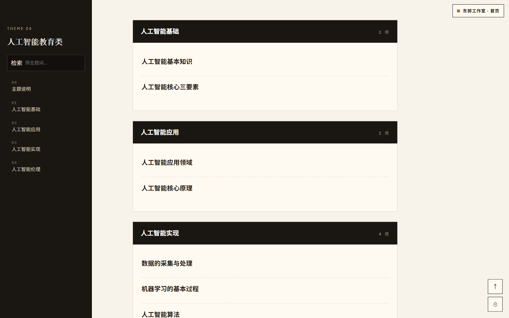
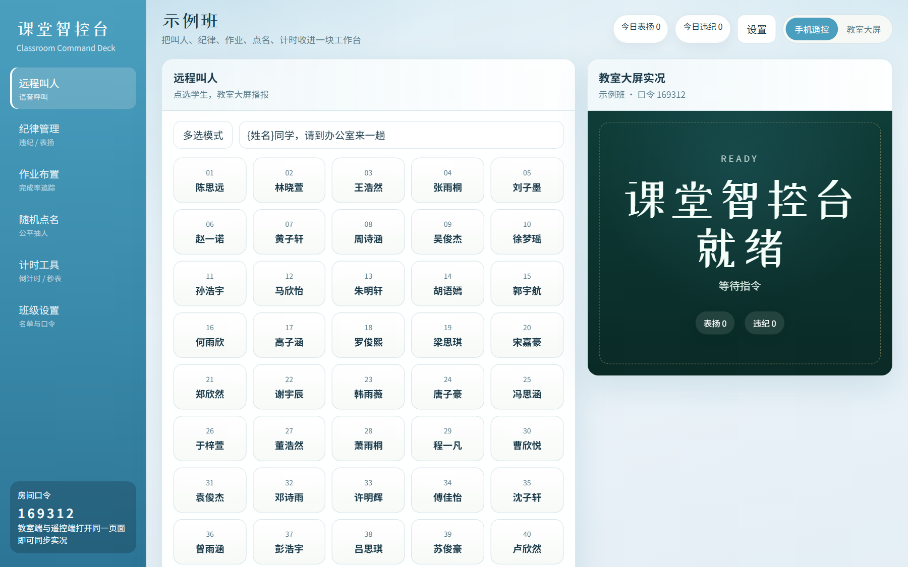
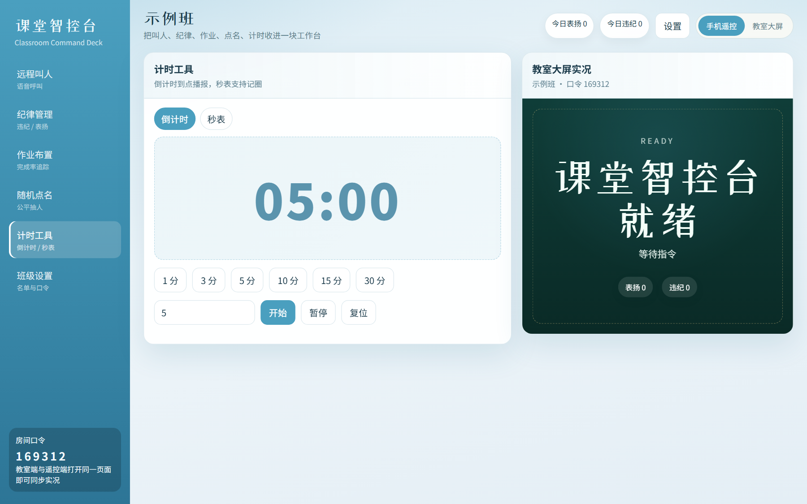

上周有个老师跟我说，打开精品课平台像进了大型商场——入口挺多，就是不知道先往哪走。另一位则天天把课堂计时器、随机点名、PPT 切来切去，课间恨不得多长两只手。
这两种烦，我都碰到过。于是自己动手，做了两套本地网页：一套帮你把 2026 精品课解读 理成可逛的目录；一套把 课堂常用工具 收进同一扇门。配色也统一成了秋波蓝，看着不累。
这篇文章不讲概念，只讲我怎么用、你怎么抄作业。
⚡ 一句话
官方平台负责「申报与开放节点」；本地页负责「找得快、讲得清、课上少切屏」。两套东西，别混着用。
申报、时间节点、平台规则——还是以 国家中小学智慧教育平台精品课[1] 实时开放为准。我做的是解读导航和课堂工具，不是替代官方入口。
以前几个 HTML 散落在文件夹里，双击哪个文件、版本写在哪儿、LOGO 还挂着旧名字……用起来像在考古。
现在打开首页，左边三条线：目录主题 / 活动指南 / 常见问题。右边六条通道，对应学科目录、实验、特教，以及 AI、阅读、科技主题解读。点进去就走，不用猜文件名。

东郭工作室 · 2026精品课解读门户
我改界面时把旧水印和版本号都清了，品牌统一成「东郭工作室」。颜色也从那种「深夜工作室黑」换成了中等秋波蓝——教室投影和大屏上，蓝底白字更稳。
学科精品课目录页，我没再做「大表格往下滚」。上面搜索，左边筛，中间卡片流。你要找某一年级、某一学科，几下就能缩范围。

搜索、筛选、卡片流：对照平台开放节点自己核对
实验教学、特殊教育两套目录，交互同一套逻辑。省得老师记三套操作习惯。
主题内容页（比如人工智能教育类）则是左侧目录 + 右侧阅读区，适合边对照官方说明边备课。

主题页：侧栏目录跟着走，长文不迷路
💡 实用提醒
材料标注了 2026，但申报节点以平台当下开放为准。本地页帮你「找内容、对主题」，不替你「卡截止日」。
精品课是「备赛 / 选题」那条线。课上另一件事更碎：计时、随机、板书辅助、各种小工具……每个开一个网页或软件，切屏就打断节奏。
所以我把课堂常用能力收进 classroom-hub。同样是秋波蓝侧栏，一眼能认出是同一套东西。

classroom-hub：课堂工具收在同一扇门里
切到计时等面板时，布局还是那一套蓝——老师不用重新学「这是哪个产品」。

侧栏切换面板，少切应用、少丢节奏
我自己上课会把工具站投到副屏或浏览器标签里固定住。主屏继续 PPT，副屏负责「点人、倒计时」。比五个书签来回跳踏实。
不是为了好看。
同一套色，老师记品牌；投影上对比够；深海蓝太闷、高亮青蓝又刺眼，中等秋波蓝折中。精品课解读和 classroom-hub 共享同一视觉语言，以后再加页也不显得拼凑。
⚠️ 边界说清楚
本地页不采集账号、不代替官方提交。有争议的以教育部平台与当期通知为准。
老师缺的往往不是「再多一个 AI 名词」，而是少翻几次文件夹、少切几次窗口。
这两套页，就是奔着这件事做的。你要是也在备精品课，或者课上被小工具弄得手忙脚乱——拿去用，改成你校自己的入口也行。
有问题直接留言。东郭工作室，继续改。
参考链接
[1] 国家中小学智慧教育平台精品课: https://jpk.basic.smartedu.cn/